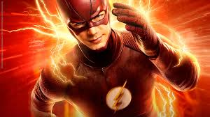
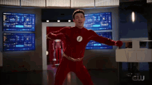
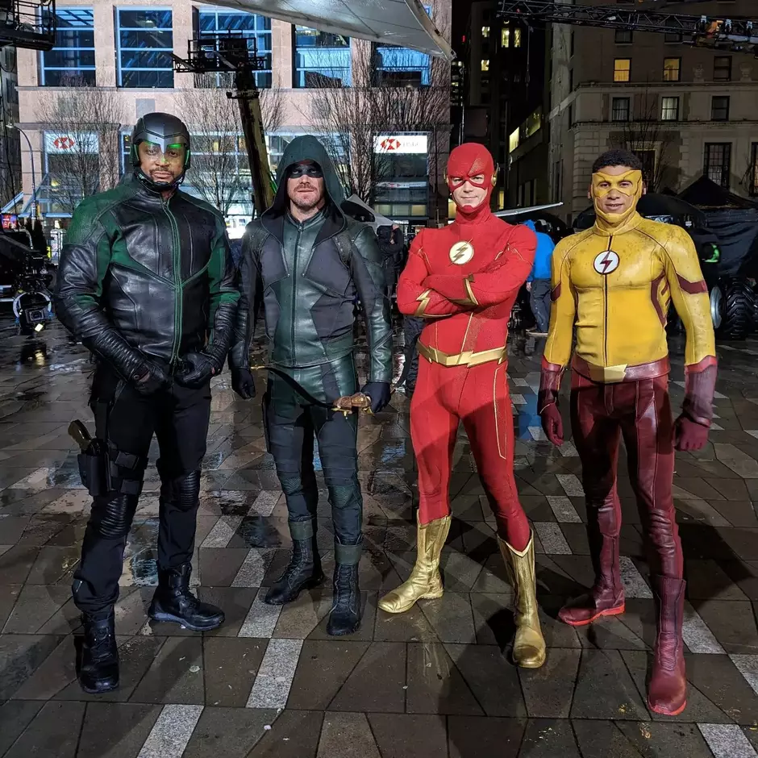
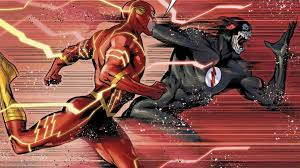
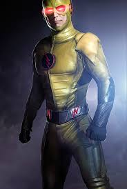
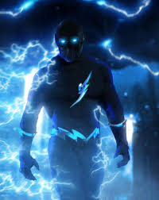

Flash
O Flash, herói da DC Comics, é conhecido por sua supervelocidade, concedida pelo "Campo de Força de Aceleração".
Seus principais portadores são Jay Garrick, Barry Allen e Wally West. Barry, um cientista forense, ganhou seus
poderes após um acidente com químicos e um raio. Vilões como o Reverse-Flash e o Cérebro desafiam sua ética e velocidade.
Integrante da Liga da Justiça, ele equilibra humor e heroísmo. Além dos quadrinhos, marcou presença em séries, filmes e animações. Sua icônica frase:
"Corro para salvar vidas, não para destruí-las".
Flash é Visto Dançando
Ele dança muito!
Flash é Visto em joinville
Caramba Joinville!
Flash é visto combatendo vilões
Ele venceu a morte
Savitar
Um poderoso oponente,
o mais rapido de todos os viloes
Flash reverso
Ele matou a mãe do flash
zoom
Ele foi enfrentar o flash
porem a morte apareceu para tirar a vida dele